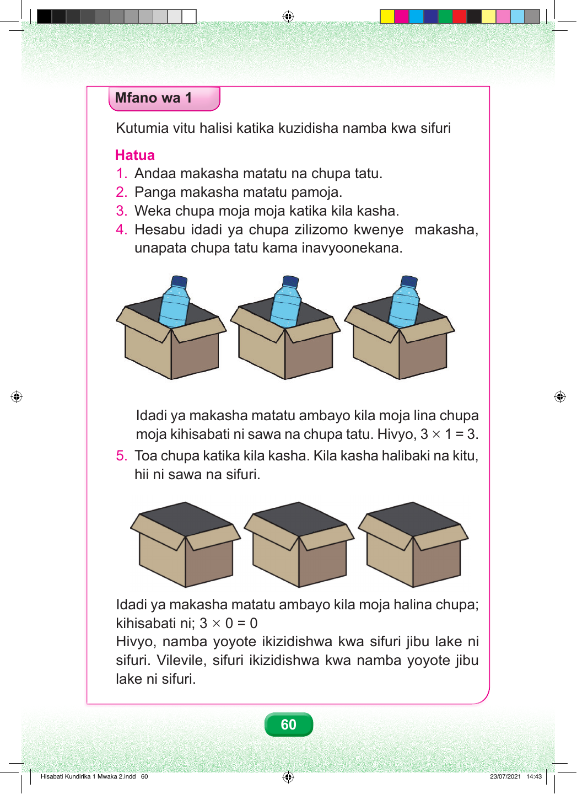

Mfano wa Kwanza Kutumia vitu halisi katika kuzidisha namba kwa sifuri Hatua za shughuli. Hatua ya kwanza. Andaa makasha matatu na chupa tatu. Hatua ya pili. Panga makasha matatu pamoja, kutoka kushoto kwenda kulia. Hatua ya tatu. Weka chupa moja katika kila kasha. Hatua ya nne. Hesabu idadi ya chupa zilizomo kwenye makasha. Maelezo ya picha ya kwanza. Mchoro una makasha matatu yaliyopangwa kwa mstari. Kila kasha lina chupa moja. Chupa moja imejumlishwa na chupa moja, kisha imejumlishwa na chupa moja; jumla ni chupa tatu. Hivyo, kuna makundi matatu, na kila kundi lina chupa moja. Idadi ya makasha ni tatu. Idadi ya chupa katika kila kasha ni moja. Kwa hiyo, tatu kuzidisha moja, sawa sawa na tatu. Hatua ya tano. Toa chupa moja kutoka katika kila kasha. Kila kasha linabaki bila chupa. Maelezo ya picha ya pili. Mchoro una makasha matatu yaliyopangwa kwa mstari. Makasha yote hayana chupa; kila kasha lina chupa sifuri. Sifuri imejumlishwa na sifuri, kisha imejumlishwa na sifuri; jumla ni sifuri. Idadi ya makasha ni tatu. Idadi ya chupa katika kila kasha ni sifuri. Kwa hiyo, tatu kuzidisha sifuri, sawa sawa na sifuri. Hitimisho. Namba yoyote ikizidishwa kwa sifuri, jibu lake ni sifuri. Vilevile, sifuri ikizidishwa kwa namba yoyote, jibu lake ni sifuri. Mwisho wa mfano. 60 Hisabati Kundirika 1 Mwaka 2.indd 60 23/07/2021 14:43